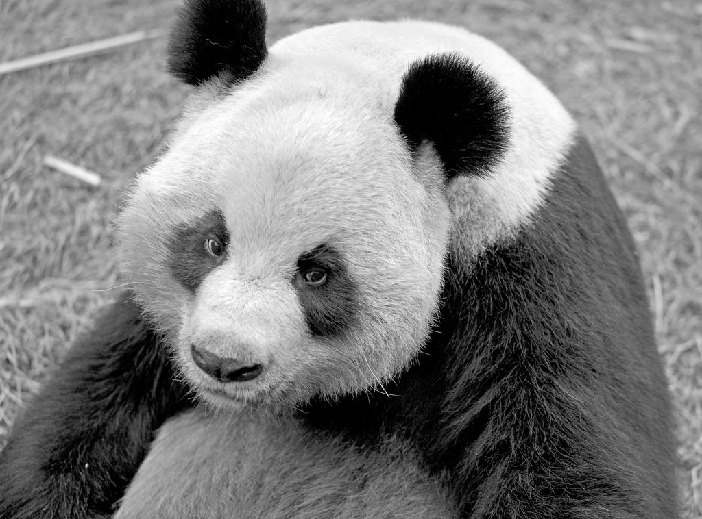

The word panda was borrowed into English from French, but no conclusive explanation of the origin of the French word panda has been found. The closest candidate is the Nepali word ponya, possibly referring to the adapted wrist bone of the red panda, which is native to Nepal. The Western world originally applied this name to the red panda. Until 1901, when it was erroneously stated to be related to the red panda, the giant panda was known as "black and white cat-footed animal" (Ailuropus melanoleucus). In most encyclopedic sources, the name "panda" or "common panda" originally referred to the lesser-known red panda, thus necessitating the inclusion of "giant" and "lesser/red" prefixes in front of the names. Even in 2010, the Encyclopedia Britannica still used "giant panda" or "panda bear" for the bear, and simply "panda" for the Ailuridae, despite the popular usage of the word "panda".
Since the earliest collection of Chinese writings, the Chinese language has given the bear 20 different names, such as huāxióng (花熊 "spotted bear") and zhúxióng (竹熊 "bamboo bear"). The most popular names in China today is dàxióngmāo (大熊貓 literally "giant bear cat"), or simply xióngmāo (熊貓 "bear cat"). The name xióngmāo (熊貓 "bear cat") was originally used to describe the red panda (Ailurus fulgens), but since giant panda was thought to be closely related to red panda, dàxióngmāo (大熊貓) was named relatively. In Taiwan, another popular name for panda is the inverted dàmāoxióng (大貓熊 "giant cat bear"), though many encyclopediae and dictionaries in Taiwan still use the "bear cat" form as the correct name. Some linguists argue, in this construction, "bear" instead of "cat" is the base noun, making this name more grammatically and logically correct, which may have led to the popular choice despite official writings.[104] This name did not gain its popularity until 1988, when a private zoo in Tainan painted a sun bear black and white and created the Tainan fake panda incident.